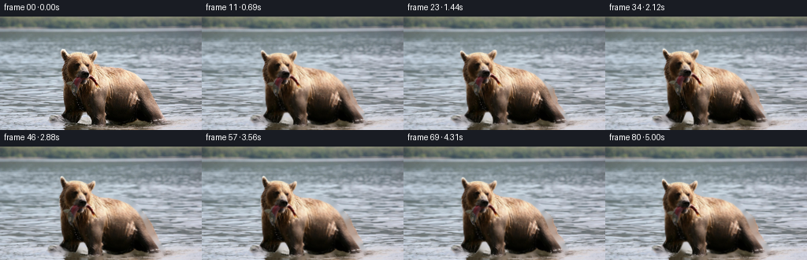
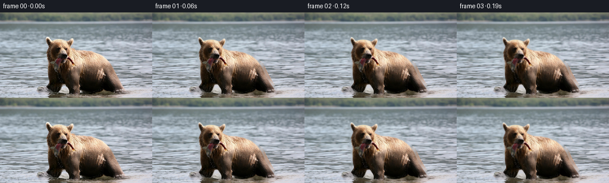

候选 01 · 2026-11-08T21:10:38.310907+00:00 · 点开播放与检查图
inspection.png

transition_check.png

代码变化
--- 上一保存版本
+++ 本次保存版本
@@ -0,0 +1,152 @@
+from pathlib import Path
+import numpy as np
+from PIL import Image, ImageDraw, ImageFilter
+import cv2
+from artifact_io import save
+
+ROOT = Path(__file__).resolve().parent
+W,H=256,144
+im=np.array(Image.open(ROOT/'first_frame.png').convert('RGB'))
+y,x=np.mgrid[:H,:W].astype(np.float32)
+
+def smooth(a,b,z):
+ q=np.clip((z-a)/(b-a),0,1)
+ return q*q*(3-2*q)
+
+def polygon(points,blur=.4):
+ canvas=Image.new('L',(W*4,H*4))
+ ImageDraw.Draw(canvas).polygon([(round(a*4),round(b*4)) for a,b in points],fill=255)
+ canvas=canvas.resize((W,H),Image.Resampling.LANCZOS)
+ if blur: canvas=canvas.filter(ImageFilter.GaussianBlur(blur))
+ return np.array(canvas).astype(np.float32)/255
+
+outline=[(77.7,42),(79.4,40.9),(81.5,42.2),(85.7,47.5),(91,46.2),(97,45.4),
+ (105,46.1),(113,49),(117.9,44.9),(121.1,43.8),(123,45.1),(122.9,49),
+ (120.7,55.3),(118.9,59.4),(121.9,62),(130,64.2),(141,65),(154,67.8),
+ (166.3,72.8),(175.9,80.7),(183,90),(189,104),(197,118),(205.1,129.1),
+ (208,133),(204.2,135.1),(196,136),(187,134.7),(178,132.1),(174,130.6),
+ (168.8,134.2),(160,136.7),(149,137.5),(140,135.9),(134.7,133.5),
+ (134.7,138.4),(130,139.8),(119.1,140),(116,136.9),(115.5,131.3),
+ (111.3,122.3),(107.4,121.6),(104.4,122.3),(101.2,130.2),(97.1,136.3),
+ (89.3,134.9),(83.2,132.7),(79.4,129.2),(77.5,126.3),(79.1,123.4),
+ (81.2,119.8),(81.1,112),(80.7,102),(80.5,91),(79.6,82.4),(78.1,75.4),
+ (78.6,66.1),(80.7,60.6),(81.4,56.2),(79.5,51.4),(78.1,47.5)]
+alpha=polygon(outline,.40)
+# Only the original photograph supplies texture. Fill the hidden background
+# with spatial water interpolation; these hidden pixels only show at moving edges.
+hole=(alpha>.025).astype(np.uint8)*255
+hole=cv2.dilate(hole,np.ones((5,5),np.uint8))
+bg=cv2.inpaint(im,hole,5,cv2.INPAINT_TELEA).astype(np.float32)
+source=im.astype(np.float32)
+
+# Smooth local articulation, evaluated on the undeformed animal.
+def pose(px,py,t):
+ progression=smooth(0,5,t)
+ tx=-5.5*progression
+ ty=.42*np.sin(2*np.pi*t/2.6) - .25*progression
+ # A quiet, live sway of the shoulders and thorax.
+ breath=.007*np.sin(2*np.pi*t/3.6)
+ dx=tx+breath*(px-139)*np.exp(-((px-143)/40)**2-((py-93)/33)**2)
+ dy=ty+.45*np.sin(2*np.pi*t/2.8)*np.exp(-((px-146)/38)**2-((py-102)/28)**2)
+ # Head remains anatomically coupled to the broad neck; it lifts and tilts.
+ wh=smooth(106,78,py)*smooth(142,113,px)
+ angle=np.deg2rad(-5.0*np.sin(2*np.pi*t/4.8)+1.25*np.sin(2*np.pi*t/2.4))
+ hx=px-110; hy=py-87
+ headx=np.cos(angle)*hx-np.sin(angle)*hy-hx - 1.1*np.sin(np.pi*t/5.0)
+ heady=np.sin(angle)*hx+np.cos(angle)*hy-hy - 1.9*np.sin(np.pi*t/5.3)
+ dx=dx+wh*headx
+ dy=dy+wh*heady
+ # Alternating short, slow steps in shallow water. The feet are stable
+ # until their swing phase, then the weight passes onto the next paw.
+ a=smooth(.55,1.8,t)
+ b=smooth(2.6,3.85,t)
+ c=smooth(1.65,3.05,t)
+ leg1=np.exp(-((px-124)/10)**4)*smooth(101,134,py)
+ leg2=np.exp(-((px-89)/11)**4)*smooth(99,132,py)
+ hind=np.exp(-((px-195)/17)**4)*smooth(108,135,py)
+ dx+=leg1*(-4.4*a-tx*.7)
+ dy+=leg1*(-3.1*np.sin(np.pi*a)-ty*.8)
+ dx+=leg2*(-5.0*b-tx*.8)
+ dy+=leg2*(-2.4*np.sin(np.pi*b)-ty*.8)
+ dx+=hind*(-3.2*c-tx*.65)
+ dy+=hind*(-1.7*np.sin(np.pi*c)-ty*.7)
+ # Both ends of the caught fish respond to head movement, gently swinging.
+ fishleft=np.exp(-((px-94)/5.5)**4-((py-92)/10)**4)
+ fishright=np.exp(-((px-120)/4.7)**4-((py-85)/6.5)**4)
+ flex=(.8*np.sin(2*np.pi*t/1.65)+.32*np.sin(2*np.pi*t/0.73))*smooth(0,.5,t)
+ dx+=fishleft*flex*smooth(78,100,py)
+ dy+=fishleft*.35*np.sin(2*np.pi*t/1.65)*smooth(0,.5,t)
+ dx+=fishright*.44*flex
+ dy+=fishright*.62*flex
+ # Tiny jaw adjustments rather than a rigid frozen muzzle.
+ jaw=np.exp(-((px-106)/7)**4-((py-81)/3.5)**4)
+ dy+=jaw*.27*np.sin(2*np.pi*t/1.25)*smooth(0,.4,t)
+ return dx,dy
+
+
+def sample(a,px,py):
+ return cv2.remap(a,px.astype(np.float32),py.astype(np.float32),cv2.INTER_LINEAR,borderMode=cv2.BORDER_REFLECT_101)
+
+# A few subdued, expanding wakes where a foot settles in the water.
+contacts=[(.0,88.,135.,.5),(1.62,119.,139.,1.0),(2.86,193.,134.,.65),(3.68,83.,135.,.9)]
+
+def render(t):
+ water=smooth(20,115,y)
+ onset=smooth(0,.40,t)
+ ux=water*(.26*t + .9*(np.sin(.16*y+.06*x-1.8*t)-np.sin(.16*y+.06*x))
+ +.44*(np.sin(.49*y-.025*x+2.1*t)-np.sin(.49*y-.025*x)))
+ uy=water*(.30*(np.sin(.32*y+.10*x-1.65*t)-np.sin(.32*y+.10*x))
+ + .18*(np.sin(.68*y-.047*x+2.2*t)-np.sin(.68*y-.047*x)))
+ light=np.zeros((H,W),np.float32)
+ for start,cx,cy,strength in contacts:
+ age=t-start
+ if age<0 or age>2.65: continue
+ r=np.sqrt((x-cx)**2+((y-cy)*3.35)**2)+.001
+ rad=3+16*age
+ env=np.exp(-((r-rad)/2.3)**2)*np.exp(-age*.75)*strength*onset
+ # Fragmented, low contrast crests, not graphic outlines.
+ tex=.5+.3*np.sin(.42*x+.8*y)+.2*np.sin(1.2*x-.3*y)
+ light+=env*tex*7*np.sin((r-rad)*1.05)
+ uy+=env*.29*(y-cy)*3.35/r
+ ux+=env*.42*(x-cx)/r
+ back=sample(bg,x+ux,y+uy)
+ # A small glint modulation on the already present waves.
+ lum=(np.sin(.69*y+.065*x-1.6*t)-np.sin(.69*y+.065*x))*.6*water
+ back+=((light+lum)*onset)[...,None]
+
+ # Invert the continuous local movement field to avoid mesh seams.
+ sx=x.copy(); sy=y.copy()
+ for _ in range(5):
+ ddx,ddy=pose(sx,sy,t)
+ sx=x-ddx; sy=y-ddy
+ animal=sample(source,sx,sy)
+ matte=sample(alpha,sx,sy)
+ # Wet fur at the contact line has subpixel motion with the surface.
+ contact=smooth(129,140,y)*smooth(143,140,y)
+ delta=.23*onset*np.sin(.35*x-3.4*t)*contact
+ if t>0:
+ edge=np.clip(1-np.abs(matte-.45)*2,0,1)*contact
+ a2=sample(alpha,sx,sy+delta)
+ matte=matte*(1-edge)+a2*edge
+ result=back*(1-matte[...,None])+animal*matte[...,None]
+ # Short-lived tiny water droplets from the newly placed forepaw.
+ for start,cx,cy,s in contacts[1:]:
+ dt=t-start+.23
+ if not 0<dt<.53: continue
+ for j in range(5):
+ vx=(j-2)*8.0
+ xx=cx+vx*dt
+ yy=cy-(9+(j%3)*3)*dt+27*dt*dt
+ if yy>141: continue
+ rr=((x-xx)/(.35+.06*(j%2)))**2+((y-yy)/.48)**2
+ aa=np.exp(-rr)*.48*np.sin(np.pi*dt/.53)*s
+ aa*=1-matte*.8
+ result=result*(1-aa[...,None])+np.array([185,195,188])*aa[...,None]
+ return np.uint8(np.clip(np.rint(result),0,255))
+
+frames=np.stack([im if i==0 else render(i/16) for i in range(81)])
+save(frames,ROOT)
+# Local viewing convenience; all submission RGB data are lossless in pixels.npz.
+Image.fromarray(frames[0]).save(ROOT/'.tmp/preview.gif',save_all=True,
+ append_images=[Image.fromarray(f) for f in frames[2::2]],duration=125,loop=0)
+print('Saved',frames.shape,frames.dtype)
候选 02 · 2026-11-08T21:18:49.814173+00:00 · 点开播放与检查图
inspection.png

transition_check.png

代码变化
--- 上一保存版本
+++ 本次保存版本
@@ -23,7 +23,7 @@
outline=[(77.7,42),(79.4,40.9),(81.5,42.2),(85.7,47.5),(91,46.2),(97,45.4),
(105,46.1),(113,49),(117.9,44.9),(121.1,43.8),(123,45.1),(122.9,49),
(120.7,55.3),(118.9,59.4),(121.9,62),(130,64.2),(141,65),(154,67.8),
- (166.3,72.8),(175.9,80.7),(183,90),(189,104),(197,118),(205.1,129.1),
+ (166.3,72.8),(176.5,80.7),(184.8,90),(192,104),(199,118),(206.1,129.1),
(208,133),(204.2,135.1),(196,136),(187,134.7),(178,132.1),(174,130.6),
(168.8,134.2),(160,136.7),(149,137.5),(140,135.9),(134.7,133.5),
(134.7,138.4),(130,139.8),(119.1,140),(116,136.9),(115.5,131.3),
@@ -35,9 +35,29 @@
# Only the original photograph supplies texture. Fill the hidden background
# with spatial water interpolation; these hidden pixels only show at moving edges.
hole=(alpha>.025).astype(np.uint8)*255
-hole=cv2.dilate(hole,np.ones((5,5),np.uint8))
-bg=cv2.inpaint(im,hole,5,cv2.INPAINT_TELEA).astype(np.float32)
source=im.astype(np.float32)
+hole=cv2.dilate(hole,np.ones((7,7),np.uint8))
+# Reconstruct the small newly exposed slivers from water at the very same
+# depth, reflecting adjoining real wave texture rather than blurring it.
+waterfill=source.copy()
+for row in range(H):
+ ids=np.flatnonzero(hole[row])
+ if len(ids)==0: continue
+ lo,hi=ids[0],ids[-1]
+ q=np.arange(W,dtype=np.float32)
+ left=lo-1-np.abs(q-(lo-1))
+ left=np.abs(left)%(max(1,lo-1)*2)
+ left=np.where(left>lo-1,2*(lo-1)-left,left)
+ span=max(1,W-hi-2)
+ right=np.abs(q-(hi+1))%(2*span)
+ right=hi+1+np.where(right>span,2*span-right,right)
+ lv=source[row,np.clip(left.astype(int),0,W-1)]
+ rv=source[row,np.clip(right.astype(int),0,W-1)]
+ a=smooth((lo+hi)/2-10,(lo+hi)/2+10,q)[:,None]
+ waterfill[row]=lv*(1-a)+rv*a
+distance=cv2.distanceTransform(hole,cv2.DIST_L2,3)
+fillblend=smooth(0,3,distance)
+bg=source*(1-fillblend[...,None])+waterfill*fillblend[...,None]
# Smooth local articulation, evaluated on the undeformed animal.
def pose(px,py,t):
命令 4 · 2026-11-08T21:10:36.578589+00:00/bin/bash -lc "cat > generate.py <<'PY'
from pathlib import Path
import numpy as np
from PIL import Image, ImageDraw, ImageFilter
import cv2
from artifact_io import save
ROOT = Path(__file__).resolve().parent
W,H=256,144
im=np.array(Image.open(ROOT/'first_frame.png').convert('RGB'))
y,x=np.mgrid[:H,:W].astype(np.float32)
def smooth(a,b,z):
q=np.clip((z-a)/(b-a),0,1)
return q*q*(3-2*q)
def polygon(points,blur=.4):
canvas=Image.new('L',(W*4,H*4))
ImageDraw.Draw(canvas).polygon([(round(a*4),round(b*4)) for a,b in points],fill=255)
canvas=canvas.resize((W,H),Image.Resampling.LANCZOS)
if blur: canvas=canvas.filter(ImageFilter.GaussianBlur(blur))
return np.array(canvas).astype(np.float32)/255
outline=[(77.7,42),(79.4,40.9),(81.5,42.2),(85.7,47.5),(91,46.2),(97,45.4),
(105,46.1),(113,49),(117.9,44.9),(121.1,43.8),(123,45.1),(122.9,49),
(120.7,55.3),(118.9,59.4),(121.9,62),(130,64.2),(141,65),(154,67.8),
(166.3,72.8),(175.9,80.7),(183,90),(189,104),(197,118),(205.1,129.1),
(208,133),(204.2,135.1),(196,136),(187,134.7),(178,132.1),(174,130.6),
(168.8,134.2),(160,136.7),(149,137.5),(140,135.9),(134.7,133.5),
(134.7,138.4),(130,139.8),(119.1,140),(116,136.9),(115.5,131.3),
(111.3,122.3),(107.4,121.6),(104.4,122.3),(101.2,130.2),(97.1,136.3),
(89.3,134.9),(83.2,132.7),(79.4,129.2),(77.5,126.3),(79.1,123.4),
(81.2,119.8),(81.1,112),(80.7,102),(80.5,91),(79.6,82.4),(78.1,75.4),
(78.6,66.1),(80.7,60.6),(81.4,56.2),(79.5,51.4),(78.1,47.5)]
alpha=polygon(outline,.40)
# Only the original photograph supplies texture. Fill the hidden background
# with spatial water interpolation; these hidden pixels only show at moving edges.
hole=(alpha>.025).astype(np.uint8)*255
hole=cv2.dilate(hole,np.ones((5,5),np.uint8))
bg=cv2.inpaint(im,hole,5,cv2.INPAINT_TELEA).astype(np.float32)
source=im.astype(np.float32)
# Smooth local articulation, evaluated on the undeformed animal.
def pose(px,py,t):
progression=smooth(0,5,t)
tx=-5.5*progression
ty=.42*np.sin(2*np.pi*t/2.6) - .25*progression
# A quiet, live sway of the shoulders and thorax.
breath=.007*np.sin(2*np.pi*t/3.6)
dx=tx+breath*(px-139)*np.exp(-((px-143)/40)**2-((py-93)/33)**2)
dy=ty+.45*np.sin(2*np.pi*t/2.8)*np.exp(-((px-146)/38)**2-((py-102)/28)**2)
# Head remains anatomically coupled to the broad neck; it lifts and tilts.
wh=smooth(106,78,py)*smooth(142,113,px)
angle=np.deg2rad(-5.0*np.sin(2*np.pi*t/4.8)+1.25*np.sin(2*np.pi*t/2.4))
hx=px-110; hy=py-87
headx=np.cos(angle)*hx-np.sin(angle)*hy-hx - 1.1*np.sin(np.pi*t/5.0)
heady=np.sin(angle)*hx+np.cos(angle)*hy-hy - 1.9*np.sin(np.pi*t/5.3)
dx=dx+wh*headx
dy=dy+wh*heady
# Alternating short, slow steps in shallow water. The feet are stable
# until their swing phase, then the weight passes onto the next paw.
a=smooth(.55,1.8,t)
b=smooth(2.6,3.85,t)
c=smooth(1.65,3.05,t)
leg1=np.exp(-((px-124)/10)**4)*smooth(101,134,py)
leg2=np.exp(-((px-89)/11)**4)*smooth(99,132,py)
hind=np.exp(-((px-195)/17)**4)*smooth(108,135,py)
dx+=leg1*(-4.4*a-tx*.7)
dy+=leg1*(-3.1*np.sin(np.pi*a)-ty*.8)
dx+=leg2*(-5.0*b-tx*.8)
dy+=leg2*(-2.4*np.sin(np.pi*b)-ty*.8)
dx+=hind*(-3.2*c-tx*.65)
dy+=hind*(-1.7*np.sin(np.pi*c)-ty*.7)
# Both ends of the caught fish respond to head movement, gently swinging.
fishleft=np.exp(-((px-94)/5.5)**4-((py-92)/10)**4)
fishright=np.exp(-((px-120)/4.7)**4-((py-85)/6.5)**4)
flex=(.8*np.sin(2*np.pi*t/1.65)+.32*np.sin(2*np.pi*t/0.73))*smooth(0,.5,t)
dx+=fishleft*flex*smooth(78,100,py)
dy+=fishleft*.35*np.sin(2*np.pi*t/1.65)*smooth(0,.5,t)
dx+=fishright*.44*flex
dy+=fishright*.62*flex
# Tiny jaw adjustments rather than a rigid frozen muzzle.
jaw=np.exp(-((px-106)/7)**4-((py-81)/3.5)**4)
dy+=jaw*.27*np.sin(2*np.pi*t/1.25)*smooth(0,.4,t)
return dx,dy
def sample(a,px,py):
return cv2.remap(a,px.astype(np.float32),py.astype(np.float32),cv2.INTER_LINEAR,borderMode=cv2.BORDER_REFLECT_101)
# A few subdued, expanding wakes where a foot settles in the water.
contacts=[(.0,88.,135.,.5),(1.62,119.,139.,1.0),(2.86,193.,134.,.65),(3.68,83.,135.,.9)]
def render(t):
water=smooth(20,115,y)
onset=smooth(0,.40,t)
ux=water*(.26*t + .9*(np.sin(.16*y+.06*x-1.8*t)-np.sin(.16*y+.06*x))
+.44*(np.sin(.49*y-.025*x+2.1*t)-np.sin(.49*y-.025*x)))
uy=water*(.30*(np.sin(.32*y+.10*x-1.65*t)-np.sin(.32*y+.10*x))
+ .18*(np.sin(.68*y-.047*x+2.2*t)-np.sin(.68*y-.047*x)))
light=np.zeros((H,W),np.float32)
for start,cx,cy,strength in contacts:
age=t-start
if age<0 or age>2.65: continue
r=np.sqrt((x-cx)**2+((y-cy)*3.35)**2)+.001
rad=3+16*age
env=np.exp(-((r-rad)/2.3)**2)*np.exp(-age*.75)*strength*onset
# Fragmented, low contrast crests, not graphic outlines.
tex=.5+.3*np.sin(.42*x+.8*y)+.2*np.sin(1.2*x-.3*y)
light+=env*tex*7*np.sin((r-rad)*1.05)
uy+=env*.29*(y-cy)*3.35/r
ux+=env*.42*(x-cx)/r
back=sample(bg,x+ux,y+uy)
# A small glint modulation on the already present waves.
lum=(np.sin(.69*y+.065*x-1.6*t)-np.sin(.69*y+.065*x))*.6*water
back+=((light+lum)*onset)[...,None]
# Invert the continuous local movement field to avoid mesh seams.
sx=x.copy(); sy=y.copy()
for _ in range(5):
ddx,ddy=pose(sx,sy,t)
sx=x-ddx; sy=y-ddy
animal=sample(source,sx,sy)
matte=sample(alpha,sx,sy)
# Wet fur at the contact line has subpixel motion with the surface.
contact=smooth(129,140,y)*smooth(143,140,y)
delta=.23*onset*np.sin(.35*x-3.4*t)*contact
if t>0:
edge=np.clip(1-np.abs(matte-.45)*2,0,1)*contact
a2=sample(alpha,sx,sy+delta)
matte=matte*(1-edge)+a2*edge
result=back*(1-matte[...,None])+animal*matte[...,None]
# Short-lived tiny water droplets from the newly placed forepaw.
for start,cx,cy,s in contacts[1:]:
dt=t-start+.23
if not 0<dt<.53: continue
for j in range(5):
vx=(j-2)*8.0
xx=cx+vx*dt
yy=cy-(9+(j%3)*3)*dt+27*dt*dt
if yy>141: continue
rr=((x-xx)/(.35+.06*(j%2)))**2+((y-yy)/.48)**2
aa=np.exp(-rr)*.48*np.sin(np.pi*dt/.53)*s
aa*=1-matte*.8
result=result*(1-aa[...,None])+np.array([185,195,188])*aa[...,None]
return np.uint8(np.clip(np.rint(result),0,255))
frames=np.stack([im if i==0 else render(i/16) for i in range(81)])
save(frames,ROOT)
# Local viewing convenience; all submission RGB data are lossless in pixels.npz.
Image.fromarray(frames[0]).save(ROOT/'.tmp/preview.gif',save_all=True,
append_images=[Image.fromarray(f) for f in frames[2::2]],duration=125,loop=0)
print('Saved',frames.shape,frames.dtype)
PY
python generate.py"exit 0